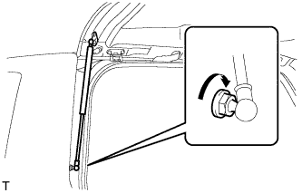
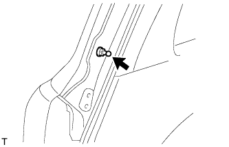

BACK DOOR SUPPORT > INSTALLATION |
| 1. INSTALL BACK DOOR STAY ASSEMBLY LH |
When reusing the back door stay:
Clean the threaded surface on the vehicle body with a non-residue solvent.
Apply adhesive to the threads of the 2 bolts.
 |
Install the back door stay with the 2 bolts.
Apply adhesive to the threads of the bolt.
 |
Install the back door stay bolt to the body.
When replacing the back door stay with a new one:
Clean the threaded surface on the vehicle body with a non-residue solvent.
Apply adhesive to the threads of the bolt.
 |
Install the back door stay bolt to the body.
Apply adhesive to the threads of the 2 bolts.
|
Install the back door stay with the 2 bolts.
Connect the ball joint of the back door stay bolt to the back door stay assembly LH.
Check that the back door stay assembly does not come off.